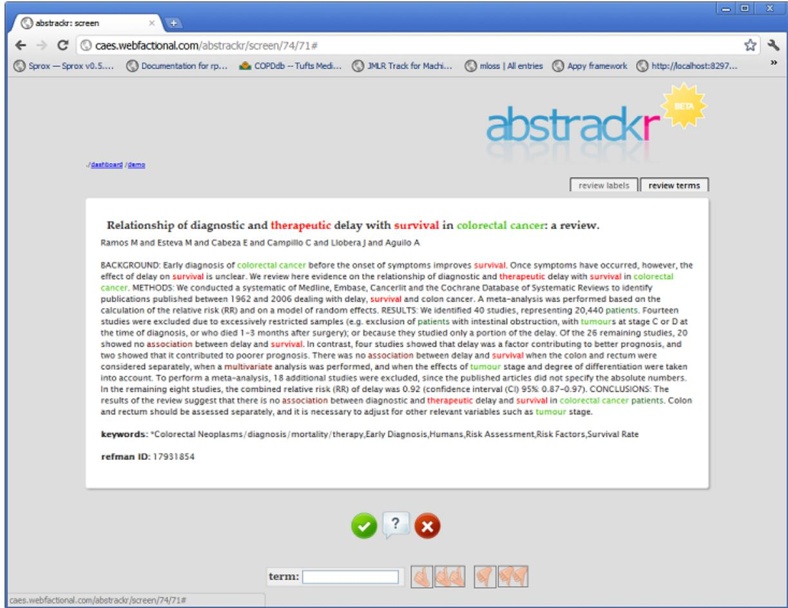
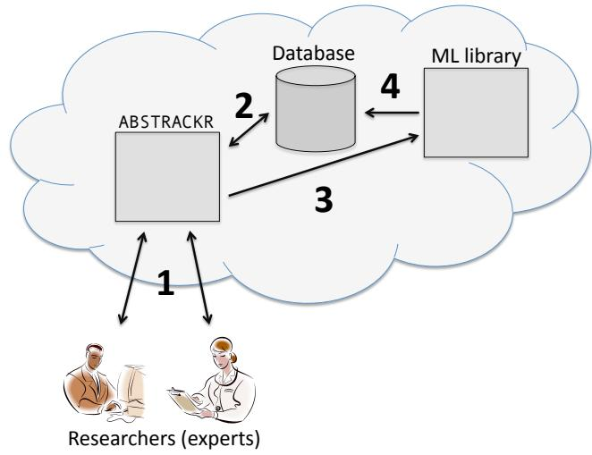

Deploying an Interactive Machine Learning System in an Evidence-Based Practice Center: abstrackr¶
Byron C. Wallace†‡, Kevin Small‡, Carla E. Brodley†
Joseph Lau‡, Thomas A. Trikalinos‡
†Tufts University, Medford, MA
‡Tufts University and Tufts Medical Center, Boston, MA byron.wallace@gmail.com, kevin.small@gmail.com, brodley@cs.tufts.edu jlau1@tuftsmedicalcenter.org, ttrikalinos@tuftsmedicalcenter.org
ABSTRACT¶
Medical researchers looking for evidence pertinent to a specific clinical question must navigate an increasingly voluminous corpus of published literature. This data deluge has motivated the development of machine learning and data mining technologies to facilitate eficient biomedical research. Despite the obvious labor-saving potential of these technologies and the concomitant academic interest therein, however, adoption of machine learning techniques by medical researchers has been relatively sluggish. One explanation for this is that while many machine learning methods have been proposed and retrospectively evaluated, they are rarely (if ever) actually made accessible to the practitioners whom they would benefit. In this work, we describe the ongoing development of an end-to-end interactive machine learning system at the Tufts Evidence-based Practice Center. More specifically, we have developed abstrackr, an online tool for the task of citation screening for systematic reviews. This tool provides an interface to our machine learning methods. The main aim of this work is to provide a case study in deploying cutting-edge machine learning methods that will actually be used by experts in a clinical research setting.
Categories and Subject Descriptors¶
I.2.1 [Artificial Intelligence]: Applications and Expert Systems—Medicine and science General Terms Software, Human Factors Keywords
machine learning, active learning, medical, applications, text classification, evidence-based medicine
1. INTRODUCTION AND MOTIVATION¶
The appeal of machine learning in the context of the biomedical domain is obvious: there are not enough human experts to organize and make sense of the exponentially increasing volume of published scientific literature, and it therefore makes sense to attempt to reduce the burden on experts with computational methods. Indeed, methodological and empirical studies of machine learning techniques applied to biomedical data abound [13]. Yet despite the potential benefits of such methods, they are rarely deployed in practice.
This article describes ongoing work on a deployed interactive machine learning system that aims to reduce the burden on researchers undertaking systematic reviews. A systematic review is an exhaustive (usually quantitative) assessment of all of the published medical evidence relevant to a precisely formed clinical question. Conducting such reviews requires reviewers (usually physicians) to search literature repositories (e.g., PubMed) to retrieve all potentially eligible citations (comprising titles and abstracts). They then must wade through this pool, designating each citation as eligible or not, based on their criteria. This process is known as citation screening, and it is the bane of many systematic reviewers. In a typical review, the initial PubMed query might produce around 5,000 potentially eligible citations, and all of these must be evaluated to find the ∼250 (∼5%) that will ultimately be deemed eligible.
Our objective is to mitigate this workload, i.e., reduce the burden imposed on researchers during the citation screening phase of systematic reviews. Citation screening can be re-cast as a classification task in which the aim is to induce a model to classify documents as ‘relevant’ or ‘irrelevant’ to the question/criteria at hand. Indeed, there have been a few studies that have demonstrated the potential of classification techniques for this task [12]. Further, we have previously demonstrated the additional utility of allowing the domain experts (reviewers) to interact with the machine learning system. More specifically, the citation screening task is an ideal candidate for active learning (AL), in which the classifier is trained interactively by the domain expert in order to make better use of the latter’s time (we describe this at greater length in Section 2). Additionally, domain experts in clinical research bring a wealth of background knowledge to their task, and it makes sense to exploit this knowledge to build a better model with less efort; to this end, we use the dual supervision paradigm [1], which allows experts to specify that certain features (in the case of text, words or ngrams) correlate with classes (e.g., ‘relevant’ or ‘irrelevant’ citations).
As a practical means of deploying the aforementioned machine learning techniques, we have developed the abstrackr tool.1 abstrackr is a collaborative (i.e., multiple reviewers can simultaneously screen citations for a review), web-based annotation tool for the citation screening task. It evolved from our original, prototypical stand-alone desktop annotation tool developed for citation screening [10]; the previous version was not collaborative (primarily because it was not web-based), and it did not have the capability to directly integrate active learning. Even without the machine learning components, abstrackr in its current form has been found useful by researchers at the Tufts Evidence based Practice Center (EPC), where it is currently being routinely used. This is an added benefit for a few reasons. First, having real users provides a springboard for experimenting with novel interactive learning protocols, such as active learning. Second, because they are already using the tool, the eventual tighter integration with the machine learning technologies will be seamless from their perspective. We also note that for a few reviews, we have used classification techniques prospectively to reduce workload.
2. ACTIVE LEARNING AND DUAL SUPER-VISION¶
We now discuss a few emerging interactive paradigms in machine learning that can help with the citation screening task by making better use of the reviewer’s time, i.e., these methods can produce a better classification model with less human efort. In Section 3, we discuss how the abstrackr tool facilitates these techniques.
2.1 Active Learning¶
In the canonical supervised machine learning scenario, it is assumed that the learner is given a training set of labeled instances from which a model is to be induced; its performance will then be assessed on the remaining instances (the test set). The assumption is that the instances comprising the training set were selected at random. By contrast, active learning (AL) (see [6] for a survey) allows the learning algorithm to select which instances are to comprise its training set. The hope is that by allowing the learning algorithm to select the instances that the expert is to label, rather than selecting these at random, a better model can be induced with less annotation efort (i.e., fewer labels).
Generally, AL methods define a function mapping a given unlabeled instance xi (e.g., an unread citation) to a scalar encoding, roughly, the expected value of acquiring a label for x , in terms of inducing a classifier. All of the unlabeled instances are then ranked by this criterion in descending order, thereby prioritizing for annotation those instances that are likely to best inform the classification model. The aim is to build a better model with fewer (informative) labels, as opposed to randomly sampling training data, which may result in wasting the expert’s time by asking him or her to label uninformative instances. Perhaps the most popular AL strategy is uncertainty sampling, in which the classifier requests from the expert a label for the unlabeled instance about whose class membership it is least certain [9].
AL has consistently performed well in experimental settings, particularly for text classification [9]. Furthermore, we have elsewhere demonstrated the potential utility of AL for the citation screening task specifically [10]. Nonetheless, there are questions regarding its eficacy in practice [3, 7, 2].
An under-appreciated obstacle to deploying AL systems in the ‘real-world’ is confronting the unrealistic assumptions typically made in AL research [4, 11]. In particular, it is usually assumed that there is a single, infallible, oracular expert who will provide accurate labels at a fixed cost. In our case, however, there are typically multiple reviewers participating in a given project, with varying levels of expertise (fallibility) and cost. We recently proposed a strategy for active learning in this scenario [11]: the idea is to assign the majority of labeling tasks to novice reviewers, who tend to be cheaper, and reserve more experienced (expensive) reviewers for ambiguous (i.e., dificult to classify) citations. More precisely, this is accomplished by relying on the metacognitive abilities of novice reviewers: we ask them to flag ambiguous/dificult citations as such, and re-assign these to more experienced experts. In the following section we will discuss how we are operationalizing this strategy with the abstrackr tool.
2.2 Dual Supervision¶
Classification algorithms in machine learning have historically been designed to learn from instance labels, i.e., classifiers are typically induced over a set of examples (e.g., biomedical citations) that have been manually categorized into the classes to which they belong. This is referred to as supervised learning. However, it has recently been observed by the machine learning community that alternative forms of supervision, e.g., indicating that a certain feature is associated with a particular class, may increase learning eficiency.
Indeed, when we first began experimenting with prospective active learning at the Tufts EPC, reviewers would express frustration that the model was ‘missing’ that, for example, they were uninterested in clinical trials that included children. Intuitively, experts should be able to communicate such information to the model by saying, for example, “if the word ‘children’ is in the abstract, then the citation should probably be excluded.” Dual supervision aims to achieve exactly this.
Various models for exploiting these feature-labels, once they are attained, have been proposed in the literature. These include active learning strategies [11, 7] and general classifier induction algorithms [5, 8]. The important point here is that an annotation tool that will ultimately feed into a classification algorithm should exploit this information if it’s available, as it is in the citation screening case.
3. INTRODUCING ABSTRACKR¶
Our goal in developing abstrackr has been to develop a practical means of putting the emerging machine learning technologies discussed above to semi-automate citation screening. This tedious screening task was previously being conducted by printing out reams of abstracts to read one by one while keeping track of labels in a spreadsheet. As one might imagine, this was a messy and generally unenjoyable endeavor, and because of this abstrackr has been found useful as a stand-alone annotation tool, independent of the machine learning components. In our case we thus have had domain experts willing to use the software, which has provided rapid feedback and empirical data with which to experiment with novel machine learning techniques.
The typical work-flow in abstrackr proceeds as follows. First, a literature search is conducted in the typical way, e.g.

Figure 1: A screenshot of the web-based ABSTRACKR tool. Terms that the expert has designated as indicative of relevance or irrelevance are highlighted. Users may enter additional terms into the textbox at the bottom of the screen, designating them as relevant (irrelevant) or strongly relevant (irrelevant) by clicking the single and double thumbs up (down) buttons, respectively. These labeled terms will ultimately be exploited by our learning algorithm, which integrates labeled term information into the popular SVM classification algorithm [8]. The reviewer can elect to accept (X), designate as borderline/ambiguous (?), or reject (×) the current citation. Once they do so, the next citation (as ordered by the active learning ordering function) will immediately be retrieved and displayed to the user.

Figure 2: The architecture of the ABSTRACKR system. See text for details.
via PubMed. Once the set of potentially eligible citations is retrieved, it is imported into abstrackr. A user accomplishes this by starting a new review/project in the system; to this end, they can upload either a list of PubMed IDs (these can be exported directly from the PubMed interface), an XML file exported from RefMan.2 or a tab-delimited file. The user who creates a review is designated as its lead. During the review creation process, the lead is asked a few questions regarding the project. In particular, they will be asked in which order citations are to be prioritized for screening – here they are specifying the AL function to be used. For example, they may elect to screen citations in order of the likelihood that they are relevant, as predicted by the current model, or by a criterion that ranks citations by the labeled terms (words/n-grams) that have been provided by the reviewers thus far. They may also elect to simply screen the citations in a random order. Once the review is created, the lead can invite other reviewers to join the project.
The primary interaction that a review participant has with the system is depicted in Figure 1. The user is presented with a citation (title, abstract and keywords) and can designate it as ‘relevant’, ‘borderline’ or ‘irrelevant’. Once one of these labels is assigned to the citation, the reviewer is immediately presented with a new citation to screen; this is the AL step. Which of the remaining unlabeled citations the system presents to the user is a function of the AL strategy being employed for the corresponding review. Note that terms or n-grams the user has labeled are highlighted in a color indicating their polarity, i.e., whether (and to what degree) the highlighted term is indicative of ‘relevance’ or ‘irrelevance’. Initial interactions with reviewers suggested that it is natural for them to provide two levels of granularity in either direction, i.e., a given term might be designated as ‘highly’ or ‘weakly’ indicative of relevance (irrelevance). Users can add additional labeled terms at the bottom of the page; the thumb icons correspond to the aforementioned labels. This interface enables dual supervision, as discussed in Section 2; labels are provided both for instances (citations) and features (words/n-grams). Both will ultimately be exploited by our learning algorithm, which is a variant of the Support Vector Machine (SVM) that incorporates the labeled terms during learning [8].
Figure 2 provides a schematic of the abstrackr system architecture. The numbered arrows in the figure indicate interactions and the general ‘flow’ of the system, which we now describe. (1) Researchers undertaking the review interact directly with the web application via the interface depicted in Figure 1. (2) The next citation to be screened is selected based on a priority table stored in the database. This table contains ranked lists of citations for each review in the system; these citations are ranked according to the AL function (e.g., uncertainty sampling) selected for the corresponding review. This is therefore our operationalization of AL. As previously discussed, there is a (sometimes substantial) computational cost associated with re-computing the AL score for each instance in the unlabeled pool, thus re-prioritizing the unlabeled citations can be slow. Any deployed AL system must address this issue, or else it risks being unresponsive, thereby undercutting the aim of making better use of expert time. Our strategy is to perform this reranking asynchronously: (3) abstrackr periodically calls on the machine learning library (also local to the server) to (4) re-sort the citations for the current review. This asynchronous re-ranking means that the reviewer doesn’t have to wait for the computer to decide which citation should be screened next; it is decided beforehand and immediately displayed to them.
Above, we mentioned the need to allocate labeling (screening) tasks in a way that makes the best use of the participating experts. In practice, abstrackr roughly follows the Multiple Expert Active Learning (MEAL) algorithm we have proposed elsewhere [11]. This method requires a ranking of the participants with respect to expertise; i.e., we need to know who of the participating screeners are likely to provide high-quality (correct) labels. We assume this expertise correlates with cost, that is, cheaper (less experienced) reviewers will tend to provide lower-quality labels compared to more expensive (experienced) reviewers. As a proxy for this information, we ask users how many systematic reviews they have previously participated in when they register for an account on abstrackr. When a less-experienced reviewer labels a citation with the ‘?’ button (see Figure 1), indicating that it is a borderline case (or that he or she is insuficiently confident as to whether it ought to be included or not), that citation is then re-assigned to a more experienced reviewer.
4. INITIAL USES¶
abstrackr remains very much a tool in development. As such, it has thus far functioned primarily as an annotation tool, i.e., a tool for citation screening. Indeed, abstrackr has been used to facilitate screening in over 50 systematic reviews already. We are still developing the machine learn ing techniques suitable for the case of citation screening, and we will eventually perform a large-scale validation of our methods in order to make a case for its reliability. We have therefore focused on implementing a flexible annotation tool that can accommodate the emerging machine learning techniques of: 1) active learning and 2) dual supervision. We have also operationalized our algorithm for allocating screening tasks with respect to the reviewers participating in a given review.
That said, abstrackr has been used in a few prospective cases already. However, because our large-scale validation remains to be performed, in these cases a trained assistant (not a physician) screened all of the citations that the algorithm excluded to double-check the classifier’s decisions. When uncertain about a particular citation, this assistant deferred to the project lead (a physician; i.e., a more experienced reviewer). In both cases, abstrackr did not produce any false negatives, that is, it never designated a relevant citation as being irrelevant.
More specifically, we performed prospective classification for two reviews: one concerning treatments for sleep apnea and the other investigating self-measured blood pressure. In the former, 14,368 citations were retrieved via the initial query and had to be screened; in the latter review (selfmeasured blood pressure), 9,550 citations were retrieved. Using the abstrackr system, reviewers screened these citations interactively, in order of their likelihood of being relevant (meeting the inclusion criteria), as predicted by the classification model.3 We continued this process until the model no longer classified any of the remaining unlabeled citations as relevant. At this point, the remaining abstracts were screened by the assistant.
In the case of sleep apnea, 8,358 of the 14,368 ( 60%) of the citations were screened before the model predicted that the remaining 6,010 were irrelevant. The assistant marked for review 126 of these, all of which were subsequently excluded. For self-measured blood pressure, the model predicted that the remaining citations were irrelevant once 5,632 (again about 60%) were screened. At this point, the remaining 3,918 were screened by the assistant, who flagged 48 of these as being possibly relevant. Again, all 48 were subsequently rejected by the project lead.
In summary: on both reviews for which the classification component of the abstrackr system has been deployed, it reduced workload (the number of citations that needed to be manually screened) by about 40% without wrongly excluding any relevant reviews, i.e., the sensitivity of the classifier was 100%. This was verified by an assistant doublechecking (screening) the citations that the system rejected. Once we’ve conducted our large-scale validation on many real-world systematic review datasets, this latter step of manually verifying the classifier’s decisions will no longer be required.
5. CONCLUSIONS AND FUTURE WORK¶
We have presented the abstrackr system for facilitating citation screening for systematic reviews. We view this as a case study in deploying a machine learning system for real-world use in a clinical research setting. Happily, abstrackr has been found useful as a collaborative annotation tool, independent of its machine learning components. By construction, abstrackr facilitates two emerging machine learning paradigms: active learning, in which the classification model is interactively trained by an expert (reviewer), and dual supervision, which allows the expert to impart domain knowledge to the model in the form of labeled terms.
The tool thus provides a mechanism for putting state-of-theart machine learning algorithms to use for the common and laborious clinical research task of citation screening.
abstrackr is completely open source and free to use for groups undertaking systematic reviews.4 The classification methods are not yet deployed to the public server (i.e., they are thus far only being used internally at our EPC), however, in the coming year we plan on integrating these more tightly with the web application.
REFERENCES¶
[1] J. Attenberg, P. Melville, and F. Provost. A unified approach to active dual supervision for labeling features and examples. Machine Learning and Knowledge Discovery in Databases, pages 40–55, 2010.
[2] J. Attenberg and F. Provost. Inactive learning?: Dificulties employing active learning in practice. ACM SIGKDD Explorations Newsletter, 12(2):36–41, 2011.
[3] J. Baldridge and A. Palmer. How well does active learning actually work?: Time-based evaluation of cost-reduction strategies for language documentation. In Empirical Methods on Natural Language Processing (EMNLP), pages 296–305. Association for Computational Linguistics, 2009.
[4] P. Donmez and J. G. Carbonell. Proactive learning: Cost-sensitive active learning with multiple imperfect oracles. In Conference on Information and Knowledge Management (CIKM), pages 619–628, 2008.
[5] P. Melville, W. Gryc, and R. Lawrence. Sentiment analysis of blogs by combining lexical knowledge with text classification. In Proceedings of the 15th ACM SIGKDD International Conference on Knowledge Discovery and Data Mining, pages 1275–1284. ACM, 2009.
[6] B. Settles. Active learning literature survey. Technical Report 1648, University of Wisconsin–Madison, 2010.
[7] B. Settles. Closing the loop: Fast, interactive semi-supervised annotation with queries on features and instances. In Proceedings of the Conference on Empirical Methods in Natural Language Processing (EMNLP), 2011.
[8] K. Small, B. Wallace, C. Brodley, and T. Trikalinos. The constrained weight-space svm: Learning with ranked features. In the 28th International Conference on Machine Learning (ICML), 2011.
[9] S. Tong and D. Koller. Support vector machine active learning with applications to text classification. In Journal of Machine Learning Research, pages 999–1006, 2000.
[10] B. Wallace, K. Small, C. Brodley, J. Lau, and T. Trikalinos. Modeling annotation time to reduce workload in comparative efectiveness reviews. In Proceedings of the 1st ACM International Health Informatics Symposium, pages 28–35. ACM, 2010.
[11] B. Wallace, K. Small, C. Brodley, and T. Trikalinos. Who should label what? Instance allocation in multiple expert active learning. In Proceedings of the SIAM International Conference on Data Mining (SDM), 2011.
[12] B. C. Wallace, T. A. Trikalinos, J. Lau, C. E. Brodley, and C. H. Schmid. Semi-automated screening of biomedica citations for systematic reviews. BMC Bioinformatics, 11:55, 2010.
[13] P. Zweigenbaum, D. Demner-Fushman, H. Yu, and K. Cohen. Frontiers of biomedical text mining: current progress. Briefings in Bioinformatics, 8(5):358, 2007.